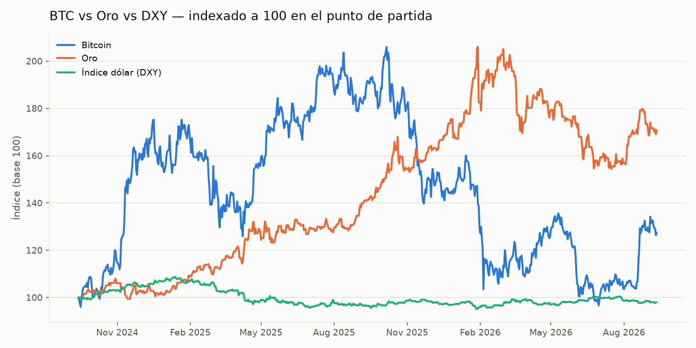
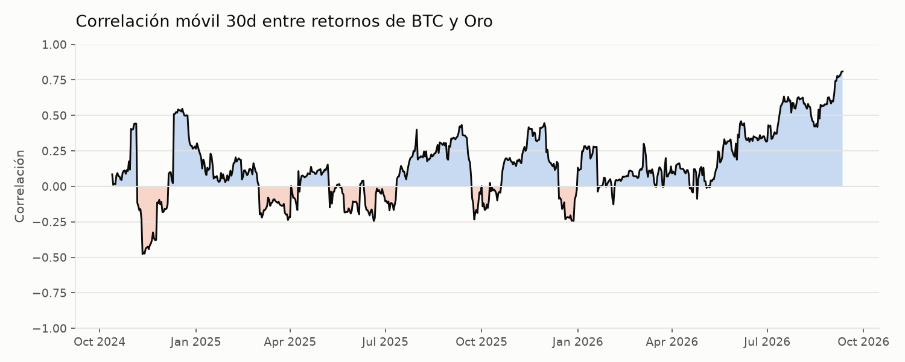

BTC vs Oro vs DXY
Indexado a 100 al inicio del período — así se comparan series de escalas distintas en un solo eje.

Correlación BTC – Oro (30 días)
Azul = se mueven juntos. Naranja = se mueven en direcciones opuestas.

Monedas BRICS vs USD
Real, rupia, yuan y rand indexados a 100 — sube = la moneda se fortalece frente al dólar. Rusia queda fuera: el dato del rublo en Yahoo Finance es poco confiable desde las sanciones de 2022.

¿Te interesa la tesis de desdolarización pero no querés operar manualmente?Criptomix automatiza estrategias de trading en cripto para inversores LATAM.
Conocer Criptomix →Últimas noticias BRICS AUTOMÁTICO — SIN VERIFICAR
Búsqueda automática de Google News, actualizada en cada corrida. Son titulares, no hechos confirmados uno por uno — para eso está la sección de abajo.
- Cargando…
Hechos verificados
Solo lo confirmado a mano con fuente primaria, sin especulación — el estándar más alto de esta página.
- 12 sep 202618ª Cumbre BRICS (Nueva Delhi): lanzamiento operativo de BRICS Pay, conectando CIPS/UPI/Pix/SPFS. Trump amenaza con aranceles del 100% a países que avancen en alternativas al dólar.
- 12 sep 2026Ministerio de Comercio de India declara oficialmente que no hay propuesta de una moneda BRICS común por el momento.
- — pendientePróximos hechos se agregan aquí a medida que se verifican con fuente primaria.